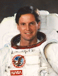

Lyndon B. Johnson Space Center
Houston, Texas 77058
|
National Aeronautics and Space Administration Lyndon B. Johnson Space Center Houston, Texas 77058 |
 |
Biographical Data |
||
GREGORY J. HARBAUGH (MR.)
NASA ASTRONAUT (FORMER)
PERSONAL DATA: Born April 15, 1956, in Cleveland, Ohio. Grew up in Willoughby, Ohio. Married. Three children. Enjoys building his own airplane, flying, running, and snow skiing.
EDUCATION: Graduated from Willoughby South High School in 1974; received a bachelor of science degree in aeronautical and astronautical engineering from Purdue University in 1978, and a master of science degree in physical science from University of Houston-Clear Lake in 1986.
ORGANIZATIONS: Member, Sigma Chi Fraternity, Omicron Delta Kappa, Sigma Gamma Tau.
SPECIAL HONORS: Recipient of the NASA Distinguished Service Medal, four NASA Space Flight Medals, the NASA Exceptional Service Medal, the NASA Exceptional Achievement Medal, the 1999 Rotary National Award for Space Achievement Stellar Award for Outstanding Leadership, the 1995 American Astronautical Society Flight Achievement Award, the Johns Hopkins University Presidential Medal, the Purdue University Outstanding Aerospace Engineer and Astronaut Alumnus Awards, Aviation Week and Space Technology Laurels for 1991 (STS 39) and 1995 (STS 71), and the Sigma Chi Fraternity Significant Sig Award.
NASA EXPERIENCE: Mr. Harbaugh came to NASAs Johnson Space Center after graduation from Purdue University in 1978. He held engineering and technical management positions in Space Shuttle flight operations, and supported Shuttle flight operations from Mission Control for most of the flights from STS-1 through STS 51-L. He served as Lead Data Processing Systems (DPS) Officer for STS-9 (Spacelab-1) and STS 41-D, Orbit DPS for STS 41-B and STS 41-C, and Ascent/Entry DPS for STS 41-G. Mr. Harbaugh also served as a senior flight controller addressing issues requiring real-time resolution, for several flights from STS 51-A through STS 51-L.
Mr. Harbaugh has a commercial pilots license with instrument rating, and over 1600 hours total flying time.
Selected by NASA in June 1987, Mr. Harbaugh became an astronaut in August 1988. His technical assignments included work in the Shuttle Avionics Integration Laboratory (SAIL), the Shuttle Remote Manipulator System (RMS), telerobotics systems development for Space Station, the Hubble Space Telescope servicing mission development, spacecraft communicator (CAPCOM) in Mission Control, and extravehicular activity (EVA) for the International Space Station (ISS). He was assigned as the backup EVA crew member and capsule communicator (Capcom) for STS-61, the first Hubble Space Telescope servicing mission.
A veteran of four space flights, Mr. Harbaugh has logged a total of 818 hours in space, including 18 hours, 29 minutes EVA. He served aboard STS-39 (April 28 through May 6, 1991), STS-54 (January 13-19, 1993), STS-71 (June 27 to July 7, 1995) and STS-82 (February 11-21, 1997).
From 1997-2001 Mr. Harbaugh served as Manager of the Extravehicular Activity Project Office, with program management responsibility for all aspects of NASAs spacewalk industry, including spacesuits, tools, training, tasks and operations for the Space Shuttle, the International Space Station, and future planetary missions.
Mr. Harbaugh left NASA in March 2001.
SPACE FLIGHT EXPERIENCE: STS-39 Discovery (April 28 through May 6, 1991) was an eight-day unclassified Department of Defense mission involving research for the Strategic Defense Initiative. Mr. Harbaugh flew as a mission specialist and was responsible for operation of the RMS and the Infrared Background Signature Survey (IBSS) spacecraft, and he was one of two crewmen trained for EVA in the event of a contingency requiring a space walk. Mission duration was 199 hours, 22 minutes.
STS-54 Endeavour (January 13-19, 1993) was a six-day mission which featured the deployment of TDRS-F, and a 4-hour 28-minute space walk by Mr. Harbaugh. Mission duration was 143 hours 38 minutes.
STS-71 Atlantis (June 27 to July 7, 1995) was the first docking.mission with the Russian Space Station Mir, and involved an exchange of crews. On this mission, .Mr. Harbaugh served as the Flight Engineer (Mission Specialist) on a seven-member (up) eight-member (down) crew. Space Shuttle Atlantis was modified to carry a docking system compatible with the Russian Mir Space Station, and Mr. Harbaugh was responsible for the inflight operation of the docking system. He was also assigned to perform any contingency EVA. Mission duration was 235 hours, 23 minutes.
STS-82 Discovery (February 11-21, 1997) the second Hubble Space Telescope (HST) servicing mission. It was a night launch and landing flight. During the 10-day mission, the crew retrieved and secured the HST in Discoverys payload bay. In five spacewalks, two teams installed two new spectrometers and eight replacement instruments, and placed insulation patches over several compartments containing key data processing, electronics and scientific instrument telemetry packages. Mr. Harbaugh participated in two space walks, totaling 14 hours and 01 minute. Following completion of upgrades and repairs, HST was redeployed and boosted to its highest orbit ever. Mission duration was 239 hours, 37 minutes.
APRIL 2001
This is the only version available from NASA. Updates must be sought direct from the above named individual.
{kind=link}